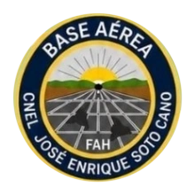

Fuerza Aérea Hondureña
Base Aérea “Cnel. José Enrique Soto Cano”
Palmerola · Comayagua · Honduras
Invitación especial
El señor Comandante de la Base Aérea “Cnel. José Enrique Soto Cano” tiene el honor de invitarle a la conmemoración de su aniversario
38
Aniversario de la Base Aérea
años de servicio
Aniversario de la Base Aérea
“Cnel. José Enrique Soto Cano”
Destinatario de honor
Al: Sr. Comandante General de la FAH
General de Brigada
Walter Yanuario Paz López
Comandante General de la Fuerza Aérea Hondureña
Fecha
24 de Septiembre de 2026
10:00 am
Lugar
Base Aérea Soto Cano
Palmerola, Comayagua
Vestimenta
Militar Uniforme D (Kepi) / Invitados Especiales Formal
Presentación institucional